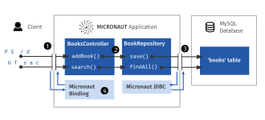

openapi: 3.0.0 (1)
info: (2)
description: This is a library API
version: 1.0.0
title: Library
license:
name: Apache-2.0
url: "https://www.apache.org/licenses/LICENSE-2.0.html"
tags: (3)
- name: books
description: Search for books and add new onesTable of Contents
- 1. Getting Started
- 2. What you will need
- 3. Creating The API Definition File
- 4. Writing the Application
- 5. Generating Server API From The OpenAPI Definition
- 6. Application Structure
- 7. Configuration
- 8. Data Storage And Access With PostgreSQL and JDBC
- 9. Writing the Controller Logic
- 10. Test Resources
- 11. Running the Application
- 12. Testing the Application
- 13. Generate a Micronaut Application Native Executable with GraalVM
- 14. Next Steps
- 15. License
Micronaut Server generation with OpenAPI
Learn how to write an OpenAPI definition, use it to generate a server template for a Micronaut application, and get it all to work
Authors: Andriy Dmytruk
Micronaut Version: 4.9.1
1. Getting Started
In this guide, we will write an OpenAPI definition file and then use it to generate a Java Micronaut server API with OpenAPI Generator.
Then we will add internal logic to the API and test our implementation.
1.1. What OpenAPI Is
The OpenAPI Specification defines a format for uniquely describing REST APIs that is both human- and machine-readable. Later in this guide, we will discover the structure of documents in the OpenAPI format. We will also create such a document for our desired API. Note that we will refer to the document describing our API as an API definition file.
1.2. Advantages Of OpenAPI
-
It provides a unique way of describing a REST API that is easy to understand and modify. It is the most broadly adopted industry standard for describing new APIs and has the most developed tooling ecosystem.
-
You can generate interactive documentation and client implementations from the same definition file in numerous languages.
-
You can use the same definition file to generate a server template. The template will include client-server communication specifics based on your API definition. It removes the need for developers to write extensive documentation about each possible path and parameter for the APIs - most can be described in the definition file. This prevents incompatibility issues between the client and server sides which might be caused by ill-communication.
The internal server logic cannot be generated from a definition file and needs to be implemented manually based on the generated server template. The reason for this is very simple: there cannot be a unified way of describing all the possible server implementations.
1.3. What You Will Learn
-
You will discover the general structure of a document in the OpenAPI format and a definition file in this format describing the desired API for our custom server.
-
You will learn to use the Micronaut OpenAPI's build tool plugins to generate Micronaut code in Java for the server application. We will extend the code by implementing internal logic and testing it.
-
You will learn how to use Micronaut Data JDBC to connect to a PostgreSQL database from our application to store and retrieve data. You will complement the application with tests.
1.4. Solution
We recommend that you follow the instructions in the next sections and create the application step by step. However, you can directly get the complete solution by downloading and unzipping micronaut-openapi-generator-server-gradle-java.zip.
2. What you will need
To complete this guide, you will need the following:
-
Some time on your hands
-
A decent text editor or IDE (e.g. IntelliJ IDEA)
-
JDK 21 or greater installed with
JAVA_HOMEconfigured appropriately
3. Creating The API Definition File
We will now create a definition file that will describe our server API, including the available paths and operations.
The definition file must be in the OpenAPI format. The document must have a specific structure. "OpenAPI Specification" guide describes it with more detail. We will write sections of the definition document based on the specification.
OpenAPI generator supports .yml and .json file formats for the definition file. We will use YAML due to its simplicity and human readability.
In the directory where you downloaded the OpenAPI generator CLI, create a file named library-definition.yml and open it in your favourite text editor.
3.1. Describing General Server Info
We will first provide general server information in the definition file. Paste the following text to the file:
src/main/resources/library-definition.yml
| 1 | The version that will be used for parsing. |
| 2 | The info object contains general information about the API like a short description and license. In this case, we will be creating a website for a library. |
| 3 | Tags will be used to logically structure different paths. |
| If you are new to OpenAPI, you might be interested in reading the OpenAPI guide or the OpenAPI 3.0.0 specification after you finish this guide. |
3.2. Defining Paths And Operations
The paths section of the definition is described in the "API Endpoints" OpenAPI Guide, but can also be understood from a few examples. This section defines paths and various operations (like GET, PUT, and POST) available on these paths.
We will proceed by defining a path that is supposed to be used for searching books in our library. The parameters that we will define in the definition will be used to narrow the search results.
Paste the following to our file:
src/main/resources/library-definition.yml
paths:
/search:
get: (1)
tags:
- books (2)
summary: Search for a book
operationId: search (3)
parameters: (4)
- name: book-name
in: query
schema:
type: string
minLength: 3 (5)
- name: author-name
in: query
schema:
type: string
responses: (6)
"200": (7)
description: Success
content:
"application/json":
schema:
type: array,
items:
$ref: "#/components/schemas/BookInfo"
"400": (8)
description: Bad Request| 1 | We define the GET operation on the /search path. |
| 2 | We use the books tag that we previously defined. Note that for each tag a controller will be generated that will implement its operations. |
| 3 | The search operation id will be used as method name for the given path. |
| 4 | We define two parameters of type string that the user should supply in the query. |
| 5 | Validation can be used on parameters. In this case, book name must contain at least three characters. |
| 6 | The responses object describes the response codes that can be produced. It also defines the structure of body if any. |
| 7 | In case of correct request, we define the body to contain a list of BookInfo objects. The schema for the book info object will be defined later in components/schemas section of the definition. |
| 8 | The "400" status code will be produced by Micronaut in case of a bad request, like an incorrect type supplied or failed validation. Even though Micronaut handles it automatically and no implementation is needed on our side, we add it for a complete API specification. |
| You can read more about parameter descriptions in the "Describing Parameters" OpenAPI guide. All the available types and their validations are described in "Data Models (Schemas)" OpenAPI guide. |
We will define another path with a POST operation, that is supposed to be used to add info about a book in our library. In this case, the request will contain a body with all the book information:
src/main/resources/library-definition.yml
/add:
post: (1)
tags: [books]
summary: Add a new book
operationId: addBook
requestBody: (2)
required: true
content:
"application/json":
schema:
$ref: "#/components/schemas/BookInfo" (3)
responses:
"200":
description: Success
"400":
description: Bad Request| 1 | We define the POST method for the /add path, and add the same tag books to it. |
| 2 | We specify that a body is required and what are the supported content-types for it. (in this case only application/json, but multiple can be allowed). |
| 3 | We write that BookInfo object is required to be in the request body. We reference the same BookInfo schema that we will define next. |
| To read more about body definitions, see the "Describing Request Body" OpenAPI guide. |
3.3. Defining Schemas
Schemas are required whenever a parameter, request body or a response body we want to describe needs to be an object. In that case we add a schema that defines all the properties of the object. You can find out about the format for schemas in the "Content of Message Bodies" OpenAPI Guide.
We will add schemas to our definition file:
src/main/resources/library-definition.yml
components:
schemas:
BookInfo:
title: Book Info (1)
description: Object containg all the info about a book
type: object
properties: (2)
name: {type: string}
availability: {$ref: "#/components/schemas/BookAvailability"} (3)
author: {type: string, minLength: 3}
isbn: {type: string, pattern: "[0-9]{13}"}
required: ["name", "availability"]
BookAvailability: (4)
type: string
enum: ["available", "not available", "reserved"]| 1 | We define the BookInfo schema inside the components/schemas section. From this schema a Java class will be generated with the same BookInfo class name. |
| 2 | We define all the properties of BookInfo, including required validation on them (In this case, it is a minimal length requirement on one string and a regex pattern on another). An abbreviated form is used for some YAML lists and dictionaries to reduce the number of rows and simplify readability. |
| 3 | We reference another schema to be used as a property. |
| 4 | We define BookAvailability schema to be an enum with three available values. A Java BookAvailability class will be generated with given enum values based on our definition. |
As you can see, schemas can be defined as enums when they can only be assigned a finite number of values. Also, you can reference other schemas as properties of a schema.
| You can read more about writing schemas in the "Data Models (Schemas)" OpenAPI guide. |
Save the file and proceed to the next part of the guide.
4. Writing the Application
Create an application using the Micronaut Command Line Interface or with Micronaut Launch.
mn create-app example.micronaut.micronautguide \
--features=validation,security,reactor,data-jdbc,flyway,jdbc-hikari,postgres,graalvm \
--build=gradle \
--lang=java \
--test=junit
If you don’t specify the --build argument, Gradle with the Kotlin DSL is used as the build tool. If you don’t specify the --lang argument, Java is used as the language.If you don’t specify the --test argument, JUnit is used for Java and Kotlin, and Spock is used for Groovy.
|
The previous command creates a Micronaut application with the default package example.micronaut in a directory named micronautguide.
If you use Micronaut Launch, select Micronaut Application as application type and add validation, security, reactor, data-jdbc, flyway, jdbc-hikari, postgres, and graalvm features.
| If you have an existing Micronaut application and want to add the functionality described here, you can view the dependency and configuration changes from the specified features, and apply those changes to your application. |
5. Generating Server API From The OpenAPI Definition
Now we will generate server API files from our definition. The generated server code will be in Java and will use the Micronaut features for client-server communication.
Open your build.gradle file and apply the micronaut-openapi plugin:
build.gradle
plugins {
id 'io.micronaut.openapi' version '...'
....
}And configure your build to generate a client:
build.gradle
micronaut {
...
openapi {
server(file("src/main/resources/library-definition.yml")) { (1)
apiPackageName = "example.micronaut.api"
modelPackageName = "example.micronaut.model"
useReactive = false (2)
useAuth = true (3)
}
}
}| 1 | Loads the service definition in order to generate a server |
| 2 | Configures the generator to not generate reactive code |
| 3 | Configures the generator to support authentication |
The server code will be generated in your build directory but automatically added as a source set.
Therefore, you can for example run ./gradlew compileJava --console=verbose and see that the sources are generated and compiled:
> Task :generateServerOpenApiApis
...
> Task :generateServerOpenApiModels
...
> Task :compileJava| The Micronaut OpenAPI generator supports a large number of parameters. Please refer to the Micronaut OpenAPI Gradle plugin documentation for all possible options. |
After generation finishes, you should see the following directory structure under your build/generated/openapi directory:
build/generated/openapi
├── generateServerOpenApiApis
│ └── src
│ └── main
│ ├── java
│ │ └── example
│ │ └── micronaut
│ │ ├── api
│ │ │ └── BooksApi.java (1)
│ │ └── annotation
│ │ └── HardNullable.java
├── generateServerOpenApiModels
│ └── src
│ └── main
│ └── java
│ └── example
│ └── micronaut
│ └── model (2)
│ ├── BookAvailability.java
│ └── BookInfo.java| 1 | The api package will contain generated interfaces for our API that we will need to implement in our controller |
| 2 | It also generates model classes which are required by the service |
6. Application Structure
To better understand the Micronaut Application we want to develop, let’s first look at the schematic of the whole application:

| 1 | The controller will receive client requests utilizing Micronaut server features. |
| 2 | The controller will call repository methods responsible for interaction with the database. |
| 3 | The repository methods will be implemented utilizing Micronaut JDBC, and will send queries to the database. |
| 4 | The files we generated with OpenAPI generator include Micronaut features responsible for server-client communication, like parameter and body binding, and JSON conversion. |
7. Configuration
Set context-path to /.
src/main/resources/application.properties
context-path=/8. Data Storage And Access With PostgreSQL and JDBC
We will use PostgreSQL database to store and access data. This will ensure that stored data is persistent between the server runs and can be easily accessed and modified by multiple instances of our application.
Before implementing any server logic, we need to create a database and configure a connection to it. We will use Flyway to set up the database schema and JDBC for accessing the data.
8.1. Configure Access for a Data Source
We will use Micronaut Data JDBC to access the MySQL data source.
Add the following required dependencies:
build.gradle
annotationProcessor("io.micronaut.data:micronaut-data-processor")
implementation("io.micronaut.data:micronaut-data-jdbc")
implementation("io.micronaut.sql:micronaut-jdbc-hikari")
runtimeOnly("org.postgresql:postgresql")Locally, the database will be provided by Test Resources.
src/main/resources/application.properties
(1)
datasources.default.dialect=POSTGRES
(2)
datasources.default.driver-class-name=${JDBC_DRIVER:org.postgresql.Driver}| 1 | Create datasource called default. |
| 2 | Set the dialect and driver class name. |
With the configured data source we will be able to access the data using Micronaut JDBC API, which will be shown further in the guide.
8.2. Database Migration with Flyway
We need a way to create the database schema. For that, we use Micronaut integration with Flyway.
Flyway automates schema changes, significantly simplifying schema management tasks, such as migrating, rolling back, and reproducing in multiple environments.
Add the following snippet to include the necessary dependencies:
build.gradle
implementation("io.micronaut.flyway:micronaut-flyway")We will enable Flyway in the Micronaut configuration file and configure it to perform migrations on one of the defined data sources.
src/main/resources/application.properties
flyway.datasources.default.enabled=true| 1 | Enable Flyway for the default datasource. |
| Configuring multiple data sources is as simple as enabling Flyway for each one. You can also specify directories that will be used for migrating each data source. Review the Micronaut Flyway documentation for additional details. |
Flyway migration will be automatically triggered before your Micronaut application starts. Flyway will read migration commands in the resources/db/migration/ directory, execute them if necessary, and verify that the configured data source is consistent with them.
Create the following migration files with the database schema creation:
src/main/resources/db/migration/V1__schema.sql
CREATE TYPE bookavailability as ENUM('available', 'reserved', 'not available');
CREATE cast ( character varying as bookavailability) WITH inout AS assignment;
CREATE TABLE book (
id SERIAL PRIMARY KEY,
name VARCHAR(255) NOT NULL,
availability bookavailability NOT NULL,
author VARCHAR(255),
ISBN CHAR(13)
);
INSERT INTO
book(name, availability, author, ISBN)
VALUES
('Alice''s Adventures in Wonderland', 'available', 'Lewis Caroll', '9783161484100'),
('The Hitchhiker''s Guide to the Galaxy', 'reserved', 'Douglas Adams', NULL),
('Java Guide for Beginners', 'available', NULL, NULL);The SQL commands in the migration will create the book table with id and four columns describing its properties, and populate the table with three sample rows.
8.3. Creating a MappedEntity
To retrieve objects from the database, you need to define a class annotated with @MappedEntity. Instances of the class will represent a single row retrieved from the database in a query.
We will now create BookEntity class. We will be retrieving data from the book table, and therefore class properties match columns in the table. Note that special annotations are added on the property corresponding to the primary key of the table.
src/main/java/example/micronaut/BookEntity.java
package example.micronaut;
import example.micronaut.model.BookAvailability;
import io.micronaut.core.annotation.NonNull;
import io.micronaut.core.annotation.Nullable;
import io.micronaut.data.annotation.GeneratedValue;
import io.micronaut.data.annotation.Id;
import io.micronaut.data.annotation.MappedEntity;
import jakarta.validation.constraints.NotBlank;
@MappedEntity("book") (1)
public record BookEntity(
@Nullable @Id @GeneratedValue(GeneratedValue.Type.AUTO) Long id, (2)
@NonNull @NotBlank String name,
@NonNull @NotBlank BookAvailability availability,
@Nullable String author,
@Nullable String isbn) {
}| 1 | Annotate the class with @MappedEntity to map the class to the table defined in the schema. |
| 2 | Specifies the ID of an entity |
8.4. Writing a Repository
Next, we will create a repository interface and define the required operations to access the database. Micronaut Data will implement the interface at compilation time. It will determine the operations to be implemented based on method naming and parameters, and supports simple create, read, update, delete operations along with highly-customizable queries.
src/main/java/example/micronaut/BookRepository.java
package example.micronaut;
import example.micronaut.model.BookAvailability;
import io.micronaut.core.annotation.NonNull;
import io.micronaut.data.jdbc.annotation.JdbcRepository;
import io.micronaut.data.model.query.builder.sql.Dialect;
import io.micronaut.data.repository.CrudRepository;
import jakarta.validation.constraints.NotBlank;
import jakarta.validation.constraints.NotNull;
import java.util.List;
@JdbcRepository(dialect = Dialect.POSTGRES) (1)
public interface BookRepository extends CrudRepository<BookEntity, Long> { (2)
@NonNull
List<BookEntity> findAll();
@NonNull
BookEntity save(@NonNull @NotBlank String name, (3)
@NonNull @NotNull BookAvailability availability,
@NonNull @NotBlank String author,
@NonNull @NotBlank String isbn);
@NonNull
List<BookEntity> findAllByAuthorContains(String author); (4)
@NonNull
List<BookEntity> findAllByNameContains(String name); (5)
@NonNull
List<BookEntity> findAllByAuthorContainsAndNameContains( (6)
String author,
String name
);
}| 1 | @JdbcRepository with a specific dialect. |
| 2 | BookEntity, the entity to treat as the root entity for the purposes of querying, is established either from the method signature or from the generic type parameter specified to the CrudRepository interface. |
| 3 | The save method will be used to store new entities in the database |
| 4 | Micronaut Data will generate the implementation of findAllByAuthorContains for us |
| 5 | We can create as many finders as needed |
| 6 | And we can combine criteria in a single method name |
9. Writing the Controller Logic
If you look inside the generated BookInfo.java file, you can see the class that was generated with all the parameters
based on our definition. Notice that the constructor signature has two parameters, which were defined as required in the
YAML definition file:
public BookInfo(String name, BookAvailability availability) {Along with that it has getters and setters for parameters and Jackson serialization annotations.
9.1. Create the Controller class
Micronaut OpenAPI has generated an interface for called BooksApi that we need to implement in order to implement our controller.
Create a BooksController.java class with the following contents:
src/main/java/example/micronaut/controller/BooksController.java
}9.2. Implementing Controller Methods
Now open BooksController.
Thanks to the @Controller annotation, an instance of the class will be initialized when Micronaut application starts, and the corresponding method will be called when there is a request.
The class must implement the BooksApi interface: it should have two methods named the same as the operations we created in the definition file.
The methods in the interface have Micronaut framework annotations describing the required API.
We will now implement them in the controller.
Using the Inversion of Control principle, we will inject BookRepository so it can be used in the methods. When initializing the controller, Micronaut will automatically provide an instance of the repository as a constructor argument:
src/main/java/example/micronaut/controller/BooksController.java
private final BookRepository bookRepository; (1)
public BooksController(BookRepository bookRepository) { (1)
this.bookRepository = bookRepository;
}| 1 | Use constructor injection to inject a bean of type BookRepository. |
Next, keeping all the generated annotations, add this implementation for the search method:
src/main/java/example/micronaut/controller/BooksController.java
@ExecuteOn(TaskExecutors.BLOCKING) (1)
public List<BookInfo> search(
String bookName,
String authorName) {
return searchEntities(bookName, authorName)
.stream()
.map(this::map) (5)
.toList();
}
private BookInfo map(BookEntity entity) {
var book = new BookInfo(entity.name(), entity.availability());
book.setIsbn(entity.isbn());
book.setAuthor(entity.author());
return book;
}
@NonNull
private List<BookEntity> searchEntities(String name, String author) { (2)
if (StringUtils.isEmpty(name) && StringUtils.isEmpty(author)) {
return bookRepository.findAll();
} else if (StringUtils.isEmpty(name)) {
return bookRepository.findAllByAuthorContains(author); (3)
} else if (StringUtils.isEmpty(author)) {
return bookRepository.findAllByNameContains(name);
} else {
return bookRepository.findAllByAuthorContainsAndNameContains(author,name); (4)
}
}| 1 | It is critical that any blocking I/O operations (such as fetching the data from the database) are offloaded to a separate thread pool that does not block the Event loop. |
| 2 | Define the searchEntities method that will manage the different combinations of desired search parameters. |
| 3 | Use the predicate we previously defined to search for substring in one column |
| 4 | Use the repository methods implemented automatically by Micronaut Data to perform a search |
| 5 | Map the BookEntity instances to the desired return type. |
Finally, we will implement the addBook method:
src/main/java/example/micronaut/controller/BooksController.java
@ExecuteOn(TaskExecutors.BLOCKING)
public void addBook(BookInfo bookInfo) {
bookRepository.save(bookInfo.getName(), (3)
bookInfo.getAvailability(),
bookInfo.getAuthor(),
bookInfo.getIsbn());
}10. Test Resources
When the application is started locally — either under test or by running the application — resolution of the datasource URL is detected and the Test Resources service will start a local PostgreSQL docker container, and inject the properties required to use this as the datasource.
For more information, see the JDBC section of the Test Resources documentation.
11. Running the Application
To run the application, use the ./gradlew run command, which starts the application on port 8080.
You can send a few requests to the paths to test the application. We will use cURL for that.
-
The search for book names, that have
"Guide"as substring should return 2BookInfoobjects:curl "localhost:8080/search?book-name=Guide"[{"name":"The Hitchhiker's Guide to the Galaxy","availability":"reserved","author":"Douglas Adams"}, {"name":"Java Guide for Beginners","availability":"available"}] -
The search for a substring
"Gu"in name will return a"Bad Request"error, since we have defined thebook-nameparameter to have at least three characters:curl -i "localhost:8080/search?book-name=Gu"HTTP/1.1 400 Bad Request Content-Type: application/json date: **** content-length: 180 connection: keep-alive {"message":"Bad Request","_embedded":{"errors":[{"message":"bookName: size must be between 3 and 2147483647"}]}, "_links":{"self":{"href":"/search?book-name=Gu","templated":false}}} -
Addition of a new book should not result in errors:
curl -i -d '{"name": "My book", "availability": "available"}' \ -H 'Content-Type: application/json' -X POST localhost:8080/addHTTP/1.1 200 OK date: Tue, 1 Feb 2022 00:01:57 GMT Content-Type: application/json content-length: 0 connection: keep-aliveYou can then verify that the addition was successful by performing another search.
12. Testing the Application
To run the tests:
./gradlew testThen open build/reports/tests/test/index.html in a browser to see the results.
12.1. Testing Models
As we have noticed previously, some files were generated as templates for tests. We will implement tests for models inside these files. Their main purpose will be to verify that we correctly described our API in the YAML file, and therefore the generated files behave as expected.
We will begin by writing tests for the required properties of BookInfo object.
Define the following imports:
src/test/java/example/micronaut/model/BookInfoTest.java
import io.micronaut.context.annotation.Property;
import io.micronaut.context.annotation.Requires;
import io.micronaut.http.HttpRequest;
import io.micronaut.http.MediaType;
import io.micronaut.http.annotation.Controller;
import io.micronaut.http.annotation.Get;
import io.micronaut.http.annotation.Produces;
import io.micronaut.http.client.HttpClient;
import io.micronaut.http.client.annotation.Client;
import io.micronaut.test.extensions.junit5.annotation.MicronautTest;
import jakarta.annotation.security.PermitAll;
import jakarta.inject.Inject;
import org.junit.jupiter.api.Test;
import jakarta.validation.Validator;
import static org.junit.jupiter.api.Assertions.*;Add the following methods inside the BookInfoTest class:
src/test/java/example/micronaut/model/BookInfoTest.java
@Inject
Validator validator; (1)
@Test
public void nameTest() {
BookInfo bookInfo = new BookInfo("Alice's Adventures in Wonderland", BookAvailability.AVAILABLE);
assertTrue(validator.validate(bookInfo).isEmpty()); (2)
bookInfo = new BookInfo(null, BookAvailability.AVAILABLE);
assertFalse(validator.validate(bookInfo).isEmpty()); (3)
}
@Test
public void availabilityTest() { (4)
BookInfo bookInfo = new BookInfo("ALice's Adventures in Wonderland", BookAvailability.RESERVED);
assertTrue(validator.validate(bookInfo).isEmpty());
bookInfo = new BookInfo("Alice's Adventures in Wonderland", null);
assertFalse(validator.validate(bookInfo).isEmpty());
}| 1 | Instruct Micronaut to inject an instance of the Validator.
Validator will automatically validate parameters and response bodies annotated with @Valid in the controller.
We will use it to test the validations manually. |
| 2 | Verify that the validator doesn’t produce any violations on a correct BookInfo instance. |
| 3 | Verify that null value is not allowed for the name property, since the property is marked as required. |
| 4 | Perform the same tests for the required availability property. |
We will then write similar tests for other properties:
src/test/java/example/micronaut/model/BookInfoTest.java
@Test
public void authorTest() {
BookInfo bookInfo = new BookInfo("Alice's Adventures in Wonderland", BookAvailability.AVAILABLE)
.author(null);
assertTrue(validator.validate(bookInfo).isEmpty());
bookInfo = new BookInfo("Alice's Adventures in Wonderland", BookAvailability.AVAILABLE)
.author("Lewis Carroll");
assertTrue(validator.validate(bookInfo).isEmpty()); (1)
bookInfo = new BookInfo("Alice's Adventures in Wonderland", BookAvailability.AVAILABLE)
.author("fo");
assertFalse(validator.validate(bookInfo).isEmpty()); (2)
}
@Test
public void ISBNTest() {
BookInfo bookInfo = new BookInfo("Alice's Adventures in Wonderland", BookAvailability.AVAILABLE)
.isbn(null);
assertTrue(validator.validate(bookInfo).isEmpty());
bookInfo = new BookInfo("Alice's Adventures in Wonderland", BookAvailability.AVAILABLE)
.isbn("9783161484100");
assertTrue(validator.validate(bookInfo).isEmpty()); (3)
bookInfo = new BookInfo("Alice's Adventures in Wonderland", BookAvailability.AVAILABLE)
.isbn("9783161 84100");
assertFalse(validator.validate(bookInfo).isEmpty()); (4)
}| 1 | Verify that there are no violations for both null or "Lewis Carroll" used as a value for the author property. |
| 2 | Verify that there is a violation if the name is too short (at least three characters are required). |
| 3 | Verify that there are no violations for valid values of the ISBN property. |
| 4 | Verify that there is a violation if the value doesn’t match the required pattern (A space is present). |
Finally, we will test JSON serialization and parsing by writing a simple controller and client:
src/test/java/example/micronaut/model/BookInfoTest.java
@Property(name = "spec.name", value = "BookInfoTest") (2)
@MicronautTest
public class BookInfoTest {
@Inject
@Client("/")
HttpClient httpClient;
@Test
public void bookInfoJsonSerialization() {
BookInfo requiredBookInfo = new BookInfo("Alice's Adventures in Wonderland", BookAvailability.AVAILABLE)
.author("Lewis Carroll")
.isbn("9783161484100");
BookInfo bookInfo = httpClient.toBlocking().retrieve(HttpRequest.GET("/bookinfo"), BookInfo.class); (5)
assertEquals(requiredBookInfo, bookInfo);
}
@Requires(property = "spec.name", value = "BookInfoTest") (3)
@Controller("/bookinfo") (1)
static class BookInfoSerdeController {
@PermitAll
@Get
BookInfo index() { (4)
return new BookInfo("Alice's Adventures in Wonderland", BookAvailability.AVAILABLE)
.author("Lewis Carroll")
.isbn("9783161484100");
}
}| 1 | Create a simple controller that will respond to requests on the /bookinfo path. |
| 2 | Specify the spec.name property for this test class. |
| 3 | Use the Requires annotation to specify that
this controller will only be used if the spec.name property is set to BookInfoTest. This will prevent the controller
from running during other tests. |
| 4 | Define a GET method that will return a BookInfo object in the application/json format. |
| 5 | Create a test that will send a request to the server and verify that the response matches the desired object (This means that both serialization and parsing work correctly). |
Similarly, we can implement tests for the BookAvailability class. The details are not shown in this guide.
12.2. Testing the Controller
We will write tests for the two paths of BookController.
Create a BooksControllerTest with the following contents:
src/test/java/example/micronaut/controller/BooksControllerTest.java
package example.micronaut.controller;
import example.micronaut.model.BookAvailability;
import example.micronaut.model.BookInfo;
import io.micronaut.core.type.Argument;
import io.micronaut.http.HttpRequest;
import io.micronaut.http.HttpStatus;
import io.micronaut.http.client.HttpClient;
import io.micronaut.http.client.annotation.Client;
import io.micronaut.http.uri.UriBuilder;
import io.micronaut.test.extensions.junit5.annotation.MicronautTest;
import jakarta.inject.Inject;
import org.junit.jupiter.api.Test;
import static org.junit.jupiter.api.Assertions.assertEquals;
@MicronautTest (1)
public class BooksControllerTest {
@Inject
@Client("${context-path}")
HttpClient client; (2)
@Test
void addBookClientApiTest() {
var body = new BookInfo("Building Microservices", BookAvailability.AVAILABLE);
body.setAuthor("Sam Newman");
body.setIsbn("9781492034025");
var response = client.toBlocking()
.exchange(HttpRequest.POST("/add", body)); (3)
assertEquals(HttpStatus.OK, response.status()); (4)
}
@Test
void searchClientApiTest() {
var response = client.toBlocking()
.exchange(HttpRequest.GET(UriBuilder.of("/search")
.queryParam("book-name", "Guide")
.build()
), Argument.listOf(BookInfo.class)); (5)
var body = response.body(); (6)
assertEquals(HttpStatus.OK, response.status());
assertEquals(2, body.size()); (7)
}
}| 1 | Annotate the class with @MicronautTest so the Micronaut framework will initialize the application context and the embedded server. More info. |
| 2 | Inject the HttpClient bean and point it to the embedded server. |
| 3 | Creating HTTP Requests is easy thanks to the Micronaut framework fluid API. |
| 4 | Verify that addition of book info was successful by checking the status code. |
| 5 | Micronaut HTTP Client simplifies binding a JSON array to a list of POJOs by using Argument::listOf. |
| 6 | Use .body() to retrieve the parsed payload. |
| 7 | Verify that there are exactly two books with "Guide" substring in title. |
To run the tests:
./gradlew testThen open build/reports/tests/test/index.html in a browser to see the results.
All the tests should run successfully.
13. Generate a Micronaut Application Native Executable with GraalVM
We will use GraalVM, an advanced JDK with ahead-of-time Native Image compilation, to generate a native executable of this Micronaut application.
Compiling Micronaut applications ahead of time with GraalVM significantly improves startup time and reduces the memory footprint of JVM-based applications.
Only Java and Kotlin projects support using GraalVM’s native-image tool. Groovy relies heavily on reflection, which is only partially supported by GraalVM.
|
13.1. GraalVM Installation
Java 21
sdk install java 21.0.5-graalFor installation on Windows, or for a manual installation on Linux or Mac, see the GraalVM Getting Started documentation.
The previous command installs Oracle GraalVM, which is free to use in production and free to redistribute, at no cost, under the GraalVM Free Terms and Conditions.
Alternatively, you can use the GraalVM Community Edition:
Java 21
sdk install java 21.0.2-graalce13.2. Native Executable Generation
To generate a native executable using Gradle, run:
./gradlew nativeCompileThe native executable is created in build/native/nativeCompile directory and can be run with build/native/nativeCompile/micronautguide.
It is possible to customize the name of the native executable or pass additional parameters to GraalVM:
build.gradle
graalvmNative {
binaries {
main {
imageName.set('mn-graalvm-application') (1)
buildArgs.add('-Ob') (2)
}
}
}| 1 | The native executable name will now be mn-graalvm-application |
| 2 | It is possible to pass extra build arguments to native-image. For example, -Ob enables the quick build mode. |
14. Next Steps
14.1. Learn More
Read OpenAPI and Micronaut documentation and guides:
-
Definition files generation from annotated controllers with Micronaut OpenAPI
14.2. Add Security
We could have defined our security requirements by adding a security schema to the library-definition.yml file.
For example, we will add HTTP Basic authentication:
paths:
/search:
# ... #
/add:
post:
# ... #
security:
- MyBasicAuth: [] (2)
components:
schemas:
# ... #
securitySchemes:
MyBasicAuth: (1)
type: http
scheme: basic| 1 | Define a security schema inside the components/securitySchemes. We want to use Basic auth for authentication. |
| 2 | Add the schema to the paths that you want to secure. In this case, we want to restrict access to adding books into our library. |
| You can read more about describing various authentication in the "Authentication and Authorization" OpenAPI guide. |
The generator will then annotate such endpoints with the Secured annotation accordingly:
@Secured(SecurityRule.IS_AUTHENTICATED)
public void addBook( /* ... */ ){ /* ... */ }You will then need to implement an
AuthenticationProvider
that satisfies your needs. If you want to finish implementing the basic authentication, continue to the
Micronaut Basic Auth guide and replicate
steps to create the AuthenticationProvider and appropriate tests.
| You can also read Micronaut Security documentation or Micronaut guides about security to learn more about the supported Authorization strategies. |
14.3. Generate Micronaut Client
You can generate a Micronaut client based on the same library-definition.yml file.
You can follow the "Use OpenAPI Definition to Generate a Micronaut Client" Guide for more information.
15. License
| All guides are released with an Apache license 2.0 license for the code and a Creative Commons Attribution 4.0 license for the writing and media (images…). |